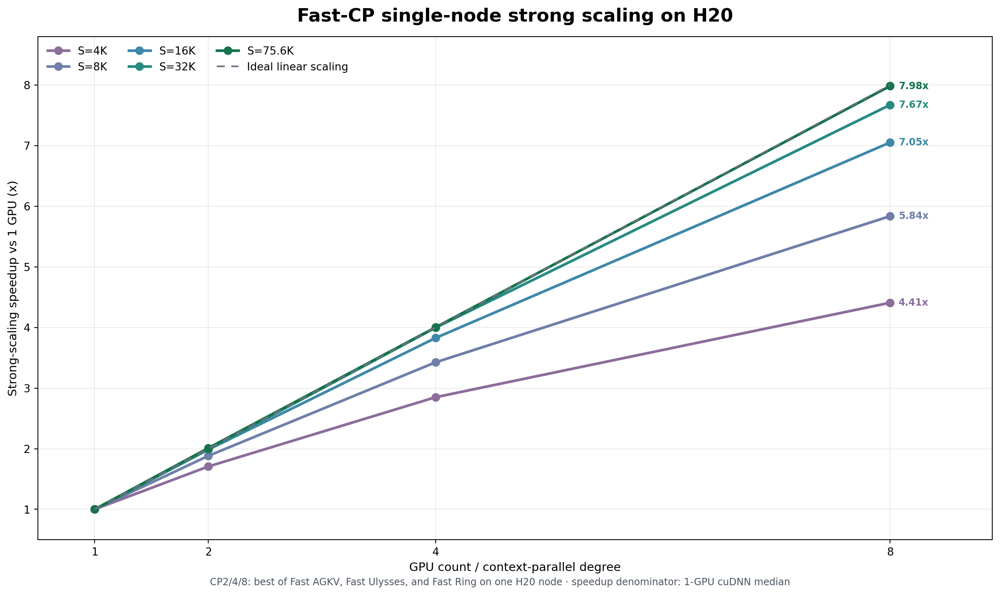

Fast CP
Fast CP 将 DiT 的图像或视频 token 分到多张 GPU。每张 GPU 只保存并计算本地 token， attention 通过通信获得完整上下文。ChituDiffusion 提供 AGKV 和 Ulysses 两种分片方式， 并为二者提供 NCCL 与 Fast transport。
基本原理
AGKV
每个 rank 保留本地 Q，只收集其他 rank 的 K/V。NCCL 路径使用
all_gather_into_tensor，Fast AGKV 通过 NVSHMEM 把本地 K/V 直接写入目标 rank 的
最终 buffer。通信结束后，各 rank 使用本地 Q 和全局 K/V 计算 attention。
AGKV 适合 head 数较少或序列较长的模型，因为它不要求按 rank 切分 attention heads。
Ulysses
Ulysses 在 attention 前把张量从“局部序列、全部 heads”变换为“完整序列、局部 heads”，attention 后执行反向变换。NCCL 路径使用 all-to-all，Fast Ulysses 使用 NVSHMEM transport。
Ulysses 的并行度必须整除 attention head 数。序列较短、head 数足够时，它通常比 AGKV 更快。
优化方案
Fast CP 包含以下优化：
- 直接写入最终 K/V buffer。 Fast AGKV 省去 NCCL gather 后的中间组织和重排。
- 通信与 Q/K/V 计算重叠。 Wan attention 在传输 K/V 时继续执行 Q projection、 norm 和 RoPE。Fast Ulysses 也可把 Q/K all-to-all 放到 Copy Engine。
- 共享 symmetric memory。 同节点 Ulysses subgroup 复用 NVSHMEM symmetric pool，避免每次 attention 重新分配通信 buffer。
- Copy Engine 扇出按互连实测。 AGKV 与 all-to-all 的 CE 路径共用一套调度： 本地拷贝独占一条 stream，远端目标按 XOR 错开访问顺序，同时在飞的远端目标数 逐 shape 实测选择。NVLink 主机每个 peer 有独立链路，会保留原本的每 peer 一条 stream；PCIe 主机所有 peer 共用一个 egress 端口，铺开只会掉带宽，实测收敛到 单条远端 stream。8x RTX PRO 5000、CP8、Wan 14B shape 下 all-to-all CE 从 3.438 ms 降到 2.995 ms，且在 GEMM 之下完全隐藏。
- 按运行条件选择后端。
torch使用 NCCL；auto在 Fast transport 不可用时 回落到 NCCL；显式选择 Fast transport 而环境不满足要求时直接报错。
fast_cp/experimental/ 还包含 Fast Ring，用于 benchmark；模型 pipeline
不会自动选择。原独立 fused Fast AGKV 实验已经合并到 Fast AGKV transport，
不再作为第二条路径维护。
Fast transport 当前要求单机 Hopper、CUDA P2P、NVSHMEM，以及针对目标 CUDA 和 GPU 架构编译的扩展。多机静态 CP 使用 NCCL。
一个进程只能持有一个 NVSHMEM runtime，所以每个 rank 只有一条 CP lane 走 Fast，
由 fast_lane_width 指定其宽度，默认是整个 TP plane。TP、EP、VAEP 和 CFG 分支合并
都在别的通信域上，与之互不干扰；CFG 把 plane 切成两条半宽 CP lane 时，模型传入实际
宽度即可让两条 lane 各自使用 Fast。scheduler 激活其它宽度的 lane 时自动回落 NCCL。
优化结果
下表来自单机 NVIDIA H20、BF16、B=1、H=40、D=128、dense non-causal
attention。每个 CP 配置选择 Fast AGKV、Fast Ulysses 和 Fast Ring 中延迟最低的实现，
加速比相对同环境单卡 cuDNN attention。
| 全局序列长度 | CP2 | CP4 | CP8 |
|---|---|---|---|
| 4K | 1.71x | 2.85x | 4.41x |
| 8K | 1.88x | 3.43x | 5.84x |
| 16K | 1.98x | 3.83x | 7.05x |
| 32K | 1.99x | 4.00x | 7.67x |
| 75.6K | 2.01x | 4.00x | 7.98x |

这些数字是 attention microbenchmark，不代表任意模型的端到端加速。模型加载、文本 编码、VAE 和输出处理不会随 CP 线性缩短。
使用示例
安装 Fast Ulysses 并装入 Fast CP 扩展源码：
运行四卡 Fast AGKV：
torchrun --standalone --nproc-per-node=4 -m chitu_diffusion.cli \
generate \
--model zimage \
--model-path /path/to/Z-Image \
--agkv-transport fast_agkv \
--output outputs/zimage-fast-agkv.png
运行四卡 Fast Ulysses：
torchrun --standalone --nproc-per-node=4 -m chitu_diffusion.cli \
generate \
--model zimage \
--model-path /path/to/Z-Image \
--attention-mode ulysses \
--ulysses-transport fast_ulysses \
--output outputs/zimage-fast-ulysses.png
不安装 Fast 扩展时，默认 torch transport 使用 NCCL：